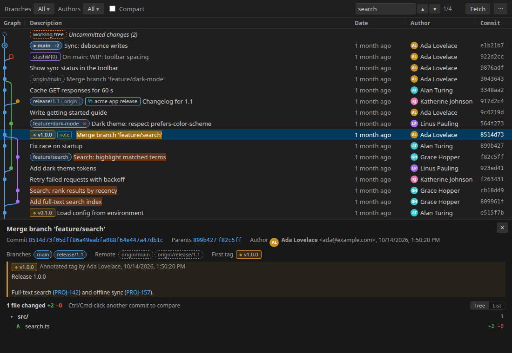

Which branches and tags contain a commit
A bug was fixed in commit 9c87c13. Which release shipped it? Is it on the release branch yet? Git answers both with --contains: a branch or tag contains a commit when the commit is in its history, that is, when you can reach the commit by walking back from the branch or tag through parents. This guide covers the commands, how to pick the first release out of the list, the other direction (--merged), the case where --contains gives the wrong answer (a cherry-picked fix), speed on big repositories, and the same answer in VS Code.
Quick answers
| I want to… | Run |
|---|---|
| List the tags that contain a commit | git tag --contains <commit> |
| The first release with it | git tag --contains <commit> --sort=creatordate | head -1 |
| The same, by version number | git tag --contains <commit> --sort=version:refname | head -1 |
| Name the commit relative to the nearest later tag | git describe --contains <commit> |
| Local branches that have it | git branch --contains <commit> |
| Remote branches that have it | git branch -r --contains <commit> (run git fetch first) |
| Branches, remote branches and tags at once | git for-each-ref --contains <commit> refs/heads refs/remotes refs/tags |
| Tags that are already in a release | git tag --merged v1.1.1 |
| Find a cherry-picked copy of the fix | git log --all --oneline --grep='<subject>' |
We ran every command on this page with git 2.53.0 in a throwaway repository and quote the output we got. <commit> can be a full or short hash, a branch, a tag or anything else git accepts as a commit.
The example repository
A small shop with releases v1.0 to v1.10. v1.2 is a lightweight tag (no message); the others are annotated. The fix is 9c87c13 on main. It was also cherry-picked onto release/1.1 and shipped there as v1.1.1. There is a remote, origin, with the same branches.
git log --oneline --graph --decorate --all * c254049 (origin/feature/dark-mode, feature/dark-mode) Dark mode for cart * 87d72c4 (HEAD -> main, origin/main, origin/HEAD) Start dark mode * d0400ec (tag: v1.10) Add saved addresses * 248be09 (tag: v1.9) Upgrade payment SDK … v1.8 down to v1.3, one commit each … * 6ecc338 (tag: v1.2) Add wishlist * 33ef012 Speed up order list * 6e9f3f2 Log failed payments * 9c87c13 Fix rounding in cart total * a8aa046 Add order history page | * 81f8e24 (tag: v1.1.1, origin/release/1.1, release/1.1) Fix rounding in cart total |/ * 931e6db (tag: v1.1) Update README * 2587c3a Merge branch 'feature/shipping' |\ | * a1229a3 Add shipping options |/ * aecc87c Show prices with two decimals * 31b22d9 Merge branch 'feature/coupons' |\ | * 513eee8 Validate coupon codes | * 14a6cfc Add coupon field |/ * 46a18bd (tag: v1.0) Add checkout form * 3e72ed7 Initial cart page
Which tags contain it
git tag --contains 9c87c13 v1.10 v1.2 v1.3 v1.4 v1.5 v1.6 v1.7 v1.8 v1.9
Every release from v1.2 on has the fix. But look at the order: v1.10 comes first, because git tag sorts names as plain text by default. For “the first release with it” you want one of two other orders:
git tag --contains 9c87c13 --sort=creatordate --format='%(refname:short) %(creatordate:short)' | head -3 v1.2 2026-01-19 v1.3 2026-01-22 v1.4 2026-01-24 git tag --contains 9c87c13 --sort=version:refname | head -1 v1.2
--sort=creatordatesorts by when the tag was made: the tagger date of an annotated tag, or the commit date for a lightweight tag. That is howv1.2, our lightweight tag, got a date. Use it when tags are made at release time.--sort=version:refname(orv:refname) reads the numbers in the name, sov1.10comes afterv1.9. Use it when someone tagged an old version late, or when tag dates are unreliable.- Put a
-in front to reverse either one:--sort=-creatordatelists the newest first. - To make version sorting the default for every
git taglist, rungit config --global tag.sort version:refname.
A commit that no tag contains prints nothing. git tag --contains c254049 (a commit only on feature/dark-mode) gave empty output and exit code 0: not released yet.
git describe --contains
git describe --contains answers in one line, by naming the commit relative to a tag that contains it:
git describe --contains 9c87c13 v1.2~3
v1.2~3 means “start at v1.2 and go back 3 first parents”: v1.2 is 6ecc338, then 33ef012, 6e9f3f2 and 9c87c13. So the fix went out in v1.2, three commits before the tag. The name is a valid revision: git show v1.2~3 shows the fix. For a commit that came in through a merge, the name has a ^2 in it, meaning “the second parent of that merge”:
git describe --contains 14a6cfc v1.1~3^2~1 git describe --contains d0400ec v1.10^0 git describe --contains c254049 fatal: cannot describe 'c254049fcfeeea34f2379e947fcf7d8f419fee87'
Read v1.1~3^2~1 as: from v1.1 go back 3, take the merge’s second parent, go back 1 more. ^0 means the commit is exactly the tagged one. “cannot describe” means no tag contains it. With --contains, git describe also uses lightweight tags, which is how it found v1.2. It prefers a nearby tag, not the oldest one: in a copy of the repository we added an annotated tag one commit after the fix, dated six weeks after v1.2, and it answered late-near~1 instead of v1.2~3. When the answer matters, check it with git tag --contains --sort=creatordate.
Which branches contain it
git branch --contains 9c87c13 feature/dark-mode * main git branch -r --contains 9c87c13 origin/HEAD -> origin/main origin/feature/dark-mode origin/main git branch -a --contains 9c87c13 feature/dark-mode * main remotes/origin/HEAD -> origin/main remotes/origin/feature/dark-mode remotes/origin/main
- Plain
git branchlooks at local branches,-rat remote-tracking branches (your copy of the remote’s branches),-aat both. The*marks the branch you are on. origin/HEAD -> origin/mainis not a branch of its own. It points at the remote’s default branch, so it always repeats that branch’s answer.- Remote-tracking branches are only as fresh as your last fetch. Run
git fetchfirst, or the answer is about the remote as it was then. release/1.1is missing from the list even though it has this fix. More on that in When the fix was cherry-picked.
Branches and tags in one command
git for-each-ref takes --contains too, and you choose which kinds of ref to check:
git for-each-ref --contains 9c87c13 --format='%(refname)' refs/heads refs/remotes refs/tags refs/heads/feature/dark-mode refs/heads/main refs/remotes/origin/HEAD refs/remotes/origin/feature/dark-mode refs/remotes/origin/main refs/tags/v1.10 refs/tags/v1.2 refs/tags/v1.3 … refs/tags/v1.9
Without --format, each line starts with the object the ref points at and its type: commit for branches and the lightweight v1.2, tag for annotated tags. We used the full %(refname) on purpose. With %(refname:short), refs/remotes/origin/HEAD came out as just origin. --sort=creatordate works here as well.
The other way round: --merged
--contains X lists the refs whose history includes X. --merged X is the mirror: the refs that are themselves in X’s history. --no-merged X lists the rest. Both work with git tag, git branch and git for-each-ref.
git tag --merged v1.1.1 # releases v1.1.1 builds on v1.0 v1.1 v1.1.1 git tag --no-merged v1.2 # tags that are not in v1.2 v1.1.1 v1.10 v1.3 … git branch -a --no-merged main # branches with commits main does not have feature/dark-mode release/1.1 remotes/origin/feature/dark-mode remotes/origin/release/1.1
v1.1.1 is not in v1.2, and release/1.1 is not merged into main: the release branch went its own way after v1.1. git branch --merged is also the usual first step for deleting branches that are already merged.
When the fix was cherry-picked
Release branches often get fixes by cherry-pick. A cherry-pick makes a new commit with the same change but a different hash, so --contains on the original says nothing about it. In our repository, git tag --contains 9c87c13 did not list v1.1.1, although v1.1.1 has the fix as 81f8e24. Four ways to find the copy:
- Search by message. Copies keep the subject:
git log --all --oneline --grep='Fix rounding' 81f8e24 Fix rounding in cart total 9c87c13 Fix rounding in cart total
If the copy was made withgit cherry-pick -x, its message ends with(cherry picked from commit 9c87c13…), sogit log --all --oneline --grep='cherry picked from commit 9c87c13'finds exactly the copies, even if the subject was reworded. - Search by code.
-S(the “pickaxe”) finds commits that add or remove a string, whatever their message says:git log --all --oneline -S'Math.round(total' 81f8e24 Fix rounding in cart total 9c87c13 Fix rounding in cart total
- Let git compare the changes.
--cherry-markmarks commits whose change exists on both sides with=:git log --oneline --cherry-mark --left-right release/1.1...main > 87d72c4 Start dark mode … = 81f8e24 Fix rounding in cart total > 33ef012 Speed up order list > 6e9f3f2 Log failed payments = 9c87c13 Fix rounding in cart total > a8aa046 Add order history page git cherry -v main release/1.1 - 81f8e246c4eca57179c4b5ea6e09f796b86e24e9 Fix rounding in cart total
git cherry -v main release/1.1lists the commits onrelease/1.1that are not onmain:-means an equivalent change is already onmain,+means it is not. This matches on the diff, so it fails if the copy needed a conflict fix. - Then ask about the copy.
git tag --contains 81f8e24printedv1.1.1. The fix shipped first inv1.1.1on the 1.1 line and inv1.2onmain.
The same blind spot applies to rebased and squash-merged commits: they are new commits too, and only the message or the code connects them to the old ones.
Speed on big repositories
--contains has to walk history for every ref it checks, so it gets slow when there are thousands of tags. We built a test repository with 60,000 commits and 5,000 annotated tags and asked about an old commit that 4,992 of the tags contain:
| Command | Time (3 runs) |
|---|---|
git tag --contains <commit> | 0.20–0.24 s |
git for-each-ref --contains <commit> refs/tags | 3.4–3.7 s |
the same after git commit-graph write --reachable | git tag: 0.09–0.11 s; for-each-ref: 6.0–6.3 s |
git branch -a --contains <commit> (one branch) | 0.05–0.06 s |
Same list, very different times: git tag --contains was about 15 times faster than git for-each-ref --contains, and about 60 times faster once a commit-graph file existed. A real repository with long merge histories and many tags can take seconds either way. If you only need one release name, git describe --contains answered in 0.08–0.24 s on the same repository. (Times on a 12-core Linux machine with git 2.53.0; yours will differ.)
In VS Code
VS Code’s built-in Source Control Graph does not show which branches or tags contain a commit. We searched the user-facing strings of the Source Control views and of the git extension bundled with VS Code 1.147 and found no such feature. Use the integrated terminal (Ctrl+`) with the commands above.
In the Mergeline graph
Mergeline is a free, MIT-licensed git graph for VS Code, Cursor and VSCodium. From version 0.20, selecting a commit shows a Contained in line in the details pane, under the commit’s other details:
- Branches: the local branches that have the commit, your current branch first.
- Remote: the remote-tracking branches that have it.
origin/HEADis left out, since it only repeats the default branch. - First tag: the oldest tag whose history has the commit, by tag date (the commit date for a lightweight tag), which is the first release with it. When more than one tag has it, “in N tags:” follows with the list.

For the fix in the example above, that is main then feature/dark-mode; origin/feature/dark-mode and origin/main; and First tag v1.2, in 9 tags. A list longer than 6 names shows the first 6 and “+N more”; click it to see them all. Click a branch or tag name to select its tip in the graph, when that commit is loaded.
Other cases say so in words. A commit on branches but in no tag shows Tags: not in any tag yet. A commit no branch or tag reaches shows “no branch or tag (reachable only from a stash or the reflog)”.
Mergeline runs git for-each-ref --contains for local and remote branches and git tag --contains for tags (the faster of the two, as measured above), side by side, after the rest of the details have appeared, so a slow answer never holds them up. On the 5,000-tag test repository above the whole line took about 0.25 s. It gives git 8 seconds; after that the line reads “git took too long to answer (over 8 s); skipped”.
Like git, it cannot see cherry-picked copies. For the original fix it does not list v1.1.1. Type the subject into Find to step to the copy, and select that to see its tags.
Version 0.20 also lists your tags in the toolbar’s Branches filter, under a Tags heading, highest version first. The first 50 are shown; type in the box to find the others. Tick a tag to see only the history of that release, like git log v1.1.1; the button then reads ◆ v1.1.1. More in list the commits between two tags and filter the graph by branch.
Mergeline is not on the VS Code Marketplace yet. Download the .vsix from GitHub and run Extensions: Install from VSIX… (full steps).
FAQ
How do I find the first release that has a commit?
git tag --contains <commit> --sort=creatordate | head -1 gives the oldest tag that contains it. If your tag dates are unreliable, sort by version number instead with --sort=version:refname. git describe --contains <commit> also names a release in one line, such as v1.2~3.
Why does git tag --contains not list a release that I know has the fix?
The release probably got a cherry-picked copy, which has a different hash. Find the copy with git log --all --oneline --grep='<subject>' or -S'<code>' and run --contains on that. Also check that you have fetched the tags: git fetch --tags.
Is my commit on the remote yet?
Run git fetch, then git branch -r --contains <commit>. Empty output means no remote-tracking branch has it, so it has not been pushed to any branch you fetched.
What does v1.2~3 mean?
Three first parents back from the commit tagged v1.2. The commit is in v1.2, three commits before the tag. ^2 in such a name means the second parent of a merge, and ^0 means the tagged commit itself.
Related: list the commits between two tags, cherry-pick a commit, compare branches and commits and git log --first-parent.